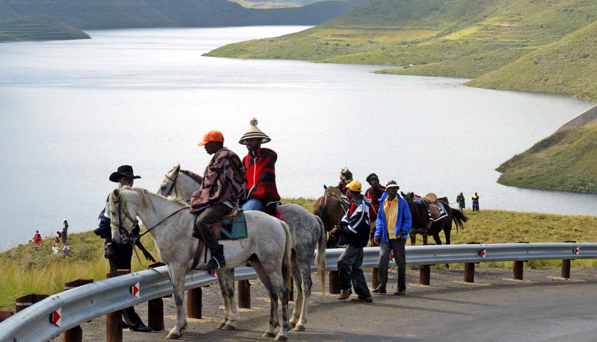
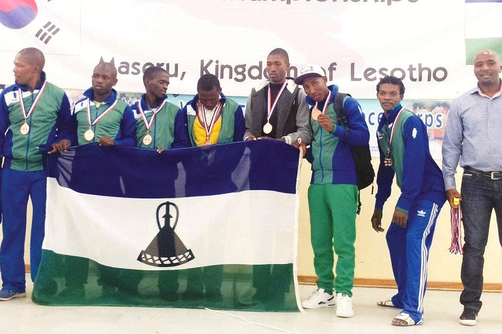

i have grown up to be a man who likes the beauty and views of nature. I have travelled alot so far to feast my eyes on the beauty of maloti mauntains and and nature surrounding them

Since the beginning,i was disciplined,always showing up on time,listening attentively and
behaving in class, Since earning my junior red belt back 2016,i started taking more care of others and trying to become a good example to the community as commanded by my then coach to an example to my teammates.
I always believed that sports are a complete waste of time, but that was before i joined Taekwondo in the year 2014,its been 8 years now and i have achieved only 3 medals so far because of a carrer breaking injury i got back i 2019.
I tried getting back on lately but i met whole different team in Maseru that does not value the Sport like i do.